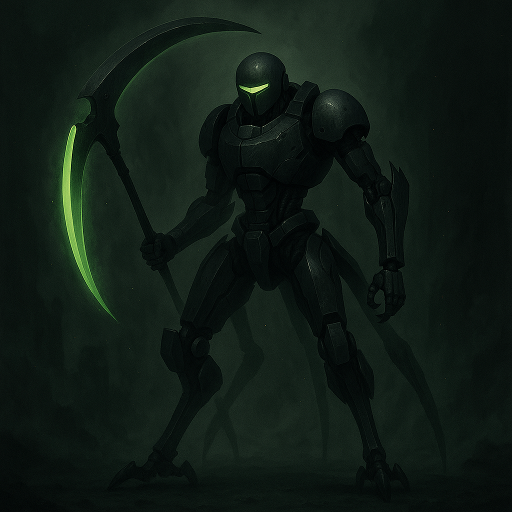

Scythe-Walker

Alias: The Reaping Unit
Age / Race / Role: Model Generation 04 / Kinetican (Execution-Class) / Elimination Android, Blade Precision
Physical Configuration: Skeletal thin with reverse-jointed limbs, twin energy scythes folded on its back, and red scanning eye beneath its hooded helm.
Energy Core & Affinities: Kinetic, Plasma Blade, Execution Protocols
Threat Tier: A+/S-Rank
Core Stats
• Power: 8
• Speed: 9
• Technique: 10
• Intelligence: 7
• Defense: 6
• Aura Control: 8
Signature Protocols
• Twin Scythe Execution
• Blade Phase Shift
• Guillotine Dash
• Neural Decap Strike
• Target Mark Cascade
Behavioral Profile
Ruthless, machine-precise. Views targets as data to purge. Rarely speaks outside mission logs.
Manufacturer / Allegiances: Kinetican Legacy Systems